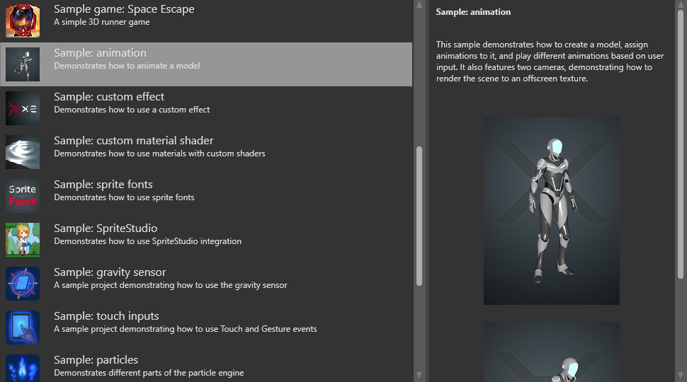

アニメーション
デザイナー プログラマー
3D モデルは、次の 3 種類のアセットを追加することによってアニメーション化できます。
- スケルトン
- スキン モデル
- アニメーション クリップ
Note
2D アニメーションについては、「スプライト」を参照してください。
スケルトン
スケルトンは、3D モデルの変形パターンを記述するデジタル構造です。スケルトンは、階層を形成するボーンで構成されています。親ボーンの位置が変化すると、子ボーンの位置にも影響があります。たとえば、手のボーンには子ボーンが 5 個 (5 本の指) があります。手が上下に動くと、指もそれに合わせて動きます。
スケルトンは、実際の人や動物の骨格と似ている必要はありません。スケルトンを使用して、任意の 3D モデルをアニメーション化できます。
Note
現在、Game Studio でスケルトンを目に見えるようにする手段はありません。
スキン モデル
スキニングは、頂点とそれが依存するボーンに重みを割り当てるプロセスです。各頂点は、通常、1 つから 4 つのボーンに依存します。
スキン モデルは、スケルトンと一致するようにスキニングされたモデルです。スキンは、ボーンが移動したときにメッシュの頂点がどのように変形するかを記述しています。
Note
Game Studio で作成できるのは、球体や立方体のような簡単な 3D モデルだけです。その方法については、「アセットの作成」を参照してください。さらに複雑なモデルを作成するには、3DS Max、Maya、Blender のような専用のソフトウェアを使用した後、モデルを Game Studio にインポートします。
アニメーション クリップ
アニメーション クリップは、特定の瞬間におけるスケルトンのポーズを記述するものです。スケルトンはアニメーションに従って動きます。メッシュの頂点は、現在のポーズと一致するように変形 (スキニング) します。
アニメーションのサンプル
Stride でのアニメーションの動き方の例を見るには、Sample: animation サンプル プロジェクトを読み込んでください。

テンプレート［First-person shooter］、［Third-person platformer］、[Top-down RPG］にも、いくつかの高度なアニメーション技法が含まれます。